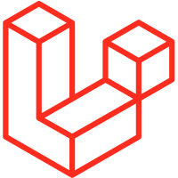
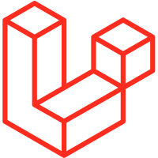

Halo, Saya Reza Alawi
Cengkareng, Jakarta Barat, Indonesia.
Saya merupakan mahasiswa semester 2 Sistem Informasi, saya berkomitmen untuk terus berkembang di
bidang pengembangan perangkat lunak. Saya ahli
dalam  HTML dan masih
mengembangkan diri saya dalam
HTML dan masih
mengembangkan diri saya dalam  Javascript
Javascript Python,
serta pengembangan backend dengan Laravel dan
frontend dengan React. Serta,
saya
mempercantik tampilan dengan menggunakan TailwindCSS
Python,
serta pengembangan backend dengan Laravel dan
frontend dengan React. Serta,
saya
mempercantik tampilan dengan menggunakan TailwindCSS
Preview Project
Saya telah membuat banyak project-project kecil untuk menambah ilmu di bidang ini, dan ini adalah project yang paling saya banggakan.
Preview Tools
Pada saat ini, saya tidak hanya fokus dalam membuat website. Saya juga membuat tools agar mempermudah dalam membuat program dan saya juga membuat program bot.
Preview Stack
Jika Anda ingin tahu alat dan teknologi yang saya gunakan untuk proyek-proyek saya, saya telah berfokus pada teknologi yang sesuai dengan keahlian saya dan kebutuhan web modern.